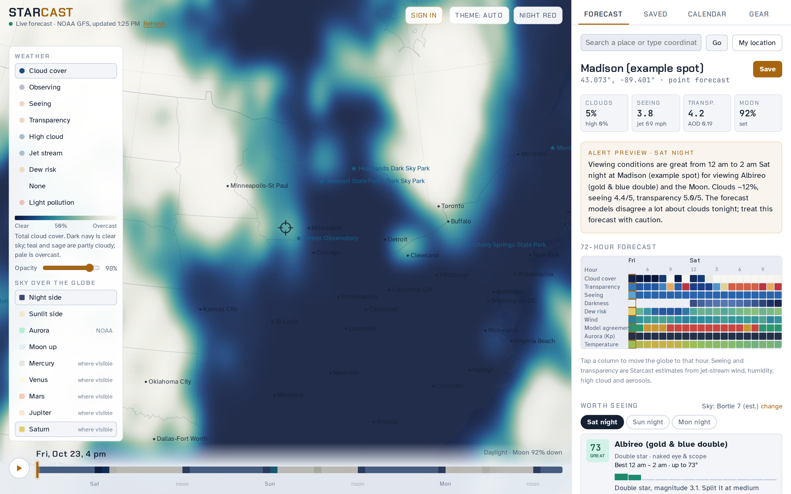

Starcast
A web map of stargazing conditions for anywhere on Earth. It puts cloud, seeing, transparency, jet stream, dew and aurora forecasts on a turning globe, then tells you what your own telescope can see tonight from the spot you pick.

Live forecast. Drag to turn, scroll to zoom, and switch layers on the left.
Forecasts, sky charts and alerts are in the full app ↗Planning a night under the stars means juggling three tools. ClearDarkSky gives hour-by-hour cloud, seeing and transparency forecasts, but only for a list of fixed sites. earth.nullschool.net shows weather beautifully on a globe, but not the conditions astronomers care about. Stellarium shows the sky, but knows nothing about the weather.
None of them answers the real question: is it worth setting up tonight, from here, with my telescope, and what should I look at?

- Map layers for the whole globe: cloud cover, an overall observing score, seeing, transparency, high cloud, jet stream, dew risk and light pollution, with a 72-hour time slider.
- Sky layers: the night side, the aurora oval from NOAA, and where on Earth each planet and the Moon can be seen.
- Any spot, any time: click the globe or search a place for an hourly forecast strip, and a ranked list of the Moon, planets and 146 other targets scored for your own telescope, sky darkness, moonlight and weather.
- Where to go: ranks real parks and public land within driving distance by darkness and forecast cloud, with drive times.
- Accounts and alerts: Google sign-in syncs saved locations and gear; a scheduled job sends a notice when a clear, dark night is coming.
| Source | Used for |
|---|---|
| NOAA GFS | Worldwide map forecast: total and high cloud, humidity, temperature, dew point, and winds at the surface, 500 and 250 hPa, every 3 hours for 72 hours |
| Open-Meteo | Spot forecasts and sharper detail when zoomed in (the best local model, such as NOAA HRRR in the US), plus agreement between the US, European and Canadian models |
| Copernicus CAMS | Haze (aerosol optical depth) for transparency |
| NOAA SWPC | Kp forecast and the OVATION aurora map |
| OpenStreetMap | Parks and public land for "Where to go"; OSRM for drive times |
| Natural Earth, US Atlas | Coastlines, countries and states |
- Every 6 hours a GitHub Actions job finds the newest complete GFS run and downloads only the fields it needs, using byte ranges from NOAA's open data bucket on AWS.
- A Python script (ecCodes, NumPy) decodes the GRIB2 files, converts GFS's running cloud averages back into 3-hour values, and packs each forecast hour into a one-byte-per-value 1° grid.
- The files are published with the site on GitHub Pages, so every visitor downloads the same small files instead of calling a weather API.
- In the browser, the app interpolates the grid smoothly in space (Catmull-Rom) and time, derives seeing and transparency, and draws the layers onto an orthographic globe with D3, blending in sharper regional data as you zoom.
Problems worth solving
- Staying inside free limits. Building the map from a weather API worked for one region but would need thousands of requests per visitor worldwide. Moving to a scheduled pipeline made global coverage free and faster, and the app keeps a running request budget for the detail it still asks for.
- Seeing and transparency. These aren't in standard forecasts, so Starcast estimates them from jet-stream speed, mid-level and surface winds, humidity, high cloud and haze.
- Light pollution. Sky brightness comes from a Walker's-law model of glow from 224 North American cities, with atmospheric extinction, calibrated against known dark-sky sites.
- Spatial data in accounts. Saved locations are stored as PostGIS geography points in Supabase, with row-level security so each person can read only their own data.
Astronomical calculations were checked against known events, such as the April 8, 2024 eclipse as seen from Madison. Forecasts are compared against ClearDarkSky's Canadian-model charts night by night, and so far they have lined up. Starcast keeps a log of these side-by-side checks so the seeing and transparency estimates can be tuned.
I designed and built Starcast on my own as a tool for my own observing with a 114 mm reflector, and as a test of serving live, global geospatial data with no server to run.
Built with AI-assisted coding (Claude); I set the requirements and design, chose the data sources, and tested the forecasts against real nights.
- JavaScript
- D3
- Python
- ecCodes / GRIB2
- NumPy
- GitHub Actions
- Supabase
- PostGIS
- Canvas rendering
What's next
Light pollution from NASA's VIIRS night-lights data, so it covers small towns and the whole world. That same data feeds my Dark Skies of Wisconsin print map.